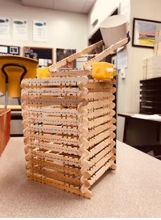
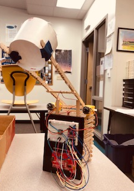

Juan's site
Catapult Project
In class we were gonna test our engineering and computer science skills when building a machina that could make it over a net.
Me and my partner Amy decided to tackle the challenge on by building a catapult. This catapult would enable us to surely make it over the net. We both immediately got to work and built the fram for the catapult. However, the real challenge would be in coding the catapult through Aurduino.
In Aurduino or code evolved from having to manually type code in the computer to launch the ping pong ball to pressing a button and launching the ping pong ball. The button was the most rage inducing part of the projecy since I tried so many times and failed many times to even get the button to work. Thankfully, in the end all worked out and our catapult worked splendidly.
 